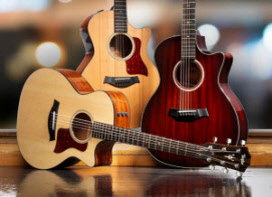
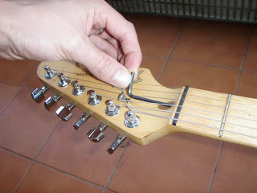
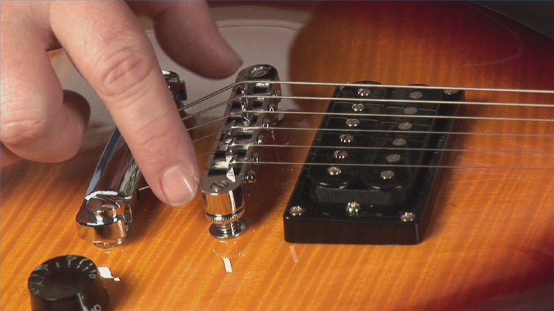
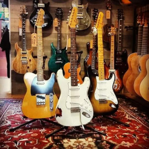
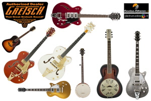
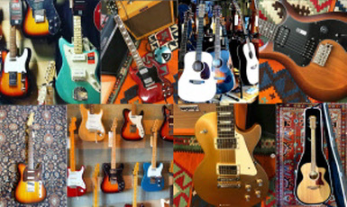
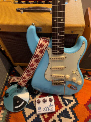
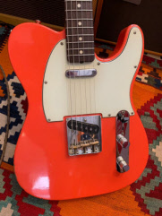
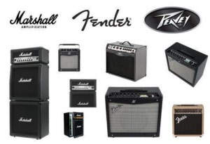

Gooise-Gitaren.nl is de website van de gelijknamige muziekwinkel in Bussum. Vanuit ons winkelpand aan de Stationsweg 40 in Bussum, naast het NS-station Naarden-Bussum verkopen wij een breed assortiment van gitaren en een mega groot aanbod van gitaar-accessoires.
Wij specialiseren ons in het verkopen van goede merken gitaren voor een scherpe prijs. Daarnaast bieden we ook een goede service. Leveren alle gitaren compleet nagekeken en goed afgesteld af. En bieden bij elke verkochte gitaar een gratis service-afstelbeurt.
Voor beginners hebben wij een groot assortiment aan laag geprijsde gitaren beschikbaar maar ook voor de gevorderde gitarist is er een fijn assortiment aan degelijke akoestische, klassieke en electrische gitaren en basgitaren aanwezig in de winkel. Gooise-Gitaren.nl biedt kwaliteit en service voor een redelijke prijs!
Je bent bij ons ook aan het juiste adres voor al je gitaar-accessoires zoals plectrums, snaren, capo's, banden en kabels. We verkopen meer dan 450 verschillende soorten! Kijk bij deze website online voor jouw gitaar of accessoire of kom gewoon gezellig langs bij de winkel om een keuze te maken! Ben je op zoek naar ons complete accessoire-assortiment kijk dan ook eens op www.plectrum-online.nl Ben je op zoek naar een goede partij die custom made plectrums en gitaarbanden voor je kan leveren? Check dan onze website www.custom-picks.eu
Gooise-Gitaren.nl biedt lage prijzen voor bekende merken èn heeft daarnaast een goede service. Wij geven graag deskundig advies op maat in de winkel, staan altijd klaar voor vragen van de klant en hebben goede koffie en thee.
Alle klanten krijgen perfect afgestelde gitaren en bij aankoop een gratis service-beurt door onze ervaren reparateur. Onze reparatie-afdeling verhelpt ook alle soorten klachten bij gitaar-reparatie en ook voor reparaties aan versterkers ben je bij ons aan het juiste adres! Kortom: een zeer scherpe prijs-kwaliteitverhouding en een hele goede service voor al onze klanten.
Genoeg reden om onze website te verkennen en binnenkort gewoon even bij ons in de winkel een kijkje te nemen. De espressomachine staat klaar!
Gooise-Gitaren.nl in Bussum is zes dagen per week geopend!
Ook maandag open van 12.30 - 18.00 uur
Elke vrijdag koopavond open van 10.30 - 20.00 uur
------------------------------------------------------------------------------------------------------------------------------------
Gooise-Gitaren.nl is sinds de opening officieel Authorized Fender Dealer.
Wij verkopen een breed assortiment van akoestische Fender gitaren en electrische gitaren en basgitaren van Fender USA en Mexico. Ook voor de voordelige lijn van Fender Squier kan je bij ons terecht. Daarnaast verkopen we ontzettend veel stoere Fender accessoires in de winkel.
FENDER_ELECTRISCHE_GITAREN
--------------------------------------------------------------------------------------------------------------------
Gooise-Gitaren.nl in Bussum per direct Taylor dealer Midden Nederland
 www.gooise-gitaren.nl/Akoestische-gitaren-van-Taylor--------------------------------------------------------------------------------------------------------------------
!!! REPARATIE-MAANDAG, -DINSDAG, -DONDERDAG EN -VRIJDAG !!!
 Heb je een gitaar die gerepareerd moet worden of een afstelbeurt nodig heeft?! Onze professionele reparateur Pim Dolle staat elke maandag, dinsdag, donderdag en vrijdag bij ons voor reparaties in de winkel aan de Stationsweg in Bussum, direct naast Station Naarden-Bussum. Het brengen van instrumenten kan alle dagen van de week, maar wanneer op maandag of donderdag gebracht is het instrument de volgende dag aan het einde van de dag vaak al gerepareerd! Vakkundig en snel gemaakt door een echte professional voor een scherpe en transparante prijs.
---------------------------------------------------------------------------------------------------------------------------------------
Gooise-Gitaren.nl official dealer high end Haar Guitars :
 Electrische-gitaren-van-Haar-Guitars------------------------------------------------------------------------------------------------------------------------------------
Gooise-Gitaren.nl is ook officieel Authorized Gretsch Dealer. Gretsch gitaren zijn karakteristiek in uiterlijk en geluid. Wij verkopen alle modellen van Gretsch: de Electromatic serie, de Streamliner series, Roots Collection en ook de Gretsch Professional Series. Ontdek het unieke Gretsch geluid! Voor een Gretsch White Falcon of Chat Atkins hollow body gitaar ben je bij ons aan het juiste adres! Alle Professional Gretsches komen in een originele hardcase, worden goed afgesteld geleverd en hebben een goede service en garantie!
 https://www.gooise-gitaren.nl/contents/nl/d38_Electrische_gitaren_van_Gretsch.html---------------------------------------------------------------------------------------------------------------------
De winkel heeft ook de topmerken akoestische gitaren van Takamine (Japan) en Martin (USA - Mexico) aan het assortiment toegevoegd!
Verder zijn we recent ook Richwood Dealer. De akoestische gitaren van Richwood bieden kwaliteit voor een vriendelijke prijs. Gooise-Gitaren.nl is daarmee onderscheidend binnen heel Midden-Nederland.
Gooise-Gitaren.nl : official Takamine dealer Midden Nederland
 Takamine_akoestische_gitaren
Takamine_akoestische_gitaren
---------------------------------------------------------------------------------------------------------------------
Wie op zoek is naar een klassieke gitaar van goede kwaliteit zal zeer tevreden zijn met Salvador Cortez, Takamine, Alhambra of Gomez. Wij bieden een divers aanbod klassieke gitaren, veelal met massief houten bovenblad.
Klassieke_Spaanse_gitaren----------------------------------------------------------------------------------------------------------
- GITAAR-INKOOP -
Wil je jouw gitaar verkopen of inruilen? Bij Gooise-Gitaren.nl in Bussum krijg je een eerlijke prijs voor je instrument.
Wij checken alle gitaren technisch voordat we tot verkoop of inruil overgaan.
Kom langs onze gezellige winkel in Bussum, direct naast station Naarden-Bussum, met voldoende parkeerplek voor de deur en goede koffie en thee.
Wij zullen je instrument taxeren en op de juiste waarde schatten en je een goed aanbod doen.
----------------------------------------------------------------------------------------------------------
Nieuw: custom made high end kick ass friendly priced Beauville Guitars :
www.gooise-gitaren.nl/Beauville-electrische-gitaren  Vaste verkoopprijs van € 1499,- Kom vooral langs en overtuig jezelf!
----------------------------------------------------------------------------------------------------------
Voor gitaarversterkers ben je bij ons ook aan het juiste adres. Wij leveren een grote selectie van Fender versterkers en hebben ook de versterkers van Marshall en Peavey, VOX en Orange aan ons assortiment toegevoegd. Buizen of transistor.
 Gitaar-versterkersGenoeg reden om onze website te verkennen en binnenkort gewoon even bij ons in de winkel een kijkje te nemen. De espressomachine staat klaar!
---------------------------------------------------------------------------------------------------------------------------------
De winkel Gooise-Gitaren.nl direct bij station Naarden-Bussum is ook elke maandag geopend vanaf 12.30 tot 18.00 uur!
En elke vrijdagavond hebben wij gewoon koopavond en is de winkel open tot 20.00 uur!
---------------------------------------------------------------------------------------------------------------------------------
 Electrische_gitaren_van_PRS
Electrische_gitaren_van_PRS
----------------------------------------------------------------------------------------------------------------------------------------